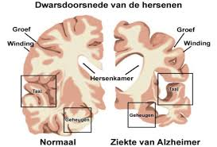
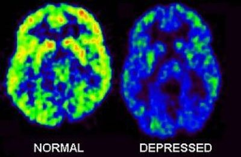
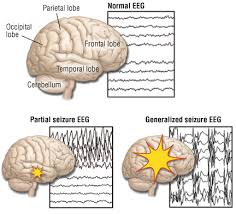
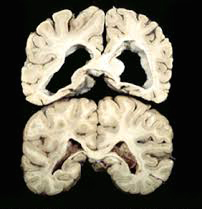
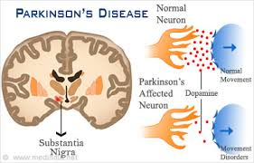

<!doctype html>
<!-- 
Kirsten de Wit
6063098
Programmerproject Data
-->
<head>
    <meta charset="utf-8"/>
    <title>Hersenaandoeningen</title>
    <LINK rel="stylesheet" type="text/css" href="project.css">
  </head>
<body>

  <!-- <div class="titel">
    Genen en hersaandoeningen
  </div>

  <div class="inleiding">
    De laatste jaren wordt er steeds meer onderzoek gedaan genen die betrokken zijn bij hersenaandoeningen. Er wordt hiernaar zowel bij dieren als mensen onderzoek gedaan. Al deze data is te vinden op het genen gedeelte van pubmed (http://www.ncbi.nlm.nih.gov/gene/). Het goed, overzichtelijk en duidelijk in kaart brengen van al deze genen die betrokken zijn bij de verschillende hersenaandoeningen wordt niet/nauwelijks gedaan. Daarom zullen er voor dit project 5 hersenaandoeningen (Alzheimers’s Disease, Parkinson's Disease, Huntington’s Disease, Depression en Epilepsy) worden gekozen en van die aandoeningen worden de 20 meest relevante genen gekozen. Door het visueel maken hiervan kan er gekeken worden of verschillende genen betrokken zijn bij dezelfde hersenaandoeningen.

  </div> -->

<script src="d3.js"></script>
<script src="fisheye.js"></script>
<script src="main3.js"></script>

<!-- <div class="AD">
  </img>
  De ziekte van Alzheimer (vaak kortweg alzheimer genoemd) is een degeneratieve aandoening van de hersenen waarbij de patiënt soms in snel tempo dementeert. De aandoening is vernoemd naar Alois Alzheimer, een Duitse psychiater en neuropatholoog. Een exacte diagnose is doorgaans pas mogelijk na overlijden, door de hersenen te onderzoeken. De ziekte wordt meestal vastgesteld bij personen die ouder zijn dan 65 jaar. Bij jongere mensen komt een variant voor die vroege of preseniele dementie wordt genoemd.
</div>

<div class="Depressie">
  </img>
  Depressie is een benaming voor een stemmingsstoornis die zich kenmerkt door een verlies van levenslust of zware neerslachtigheid. In het dagelijkse spraakgebruik wordt de term 'depressief' gebruikt voor uiteenlopende gemoedstoestanden, variërend van een korte dip tot ernstige neerslachtigheid. Een klinische depressie beschrijft een combinatie van symptomen en is geen oorzaak of verklaring voor verlies van levenslust of zware neerslachtigheid. Behandelaars, verzekeraars en beleidsmakers spreken van een klinische depressie wanneer aan een aantal criteria wordt voldaan, zoals vastgelegd in diagnostische en statistische handboeken als het ICD-10 van de Wereldgezondheidsorganisatie, of het in Nederland en in de VS gehanteerde DSM-IV TR. Volgens deze indeling is niet iedere depressieve, sombere of verdrietige stemming een psychische aandoening.  
</div>

<div class="Epilepsie">
  </img>
  Epilepsie of vallende ziekte is een ziekte waarbij bepaalde herhaaldelijke insulten plaatsvinden ten gevolge van chronische afwijkingen in de hersenstructuur, welke leiden tot abnormale en/of gesynchroniseerde activiteit van neuronen. Epilepsie wordt vaak verward met insulten; echter heeft niet iedereen wie een insult krijgt ook daadwerkelijk epilepsie; het omgekeerde is wel daadwerkelijk het geval. Epilepsiën worden vaak beschreven naar gelang het type aanval die plaatsvindt of een epilepsiesyndroom dat er aan ten grondslag ligt. De behandeling bestaat voornamelijk uit het voorschrijven van anti-epileptische medicatie. Anti-epileptica zijn per definitie anti-ictogeen; ze voorkomen insulten, maar kunnen epilepsie niet genezen. Chirurgie en andere alternatieve interventies worden voornamelijk toegepast wanneer een patiënt onvoldoende reageert op medicatie. 
</div>

<div class="HD">
  </img>
  De ziekte van Huntington of Huntingtons chorea (niet te verwarren met de ziekte van Hutchinson) is een ongeneeslijke erfelijke aandoening die bepaalde delen van de hersenen aantast. De eerste symptomen openbaren zich meestal tussen het 35e en 45e levensjaar, maar kunnen ook eerder of later in het leven optreden. Zij uit zich onder andere in onwillekeurige (choreatische) bewegingen die langzaam verergeren, verstandelijke achteruitgang en een verscheidenheid van psychische symptomen. De ziekte leidt gemiddeld na een achttiental jaren tot de dood van de patiënt(e), meestal door bijkomende oorzaken zoals longontsteking. De jeugdvorm (juveniele vorm) begint doorgaans in de tienerjaren. De ziekte van Huntington werd in 1872 door de Amerikaanse arts George Huntington uitvoerig beschreven.
</div>

<div class="PD">
  </img>
  De ziekte van Parkinson, vernoemd naar de Engelse arts James Parkinson (1755-1824), is een hersenziekte waarbij zenuwcellen, vooral, maar niet uitsluitend de zenuwcellen van de substantia nigra ("zwarte stof"), langzaam afsterven (degenereren). Wanneer de verschijnselen van deze ziekte wel aanwezig zijn maar door een andere oorzaak ontstaan, spreekt men van parkinsonisme.
</div>

<div class="Bronnen">
  http://nl.wikipedia.org/wiki/Ziekte_van_Alzheimer<br>
  http://nl.wikipedia.org/wiki/Depressie_(klinisch)<br>
  http://nl.wikipedia.org/wiki/Epilepsie<br>
  http://nl.wikipedia.org/wiki/Ziekte_van_Huntington<br>
  http://nl.wikipedia.org/wiki/Ziekte_van_Parkinson
</div>
 -->
</body>
</html>
